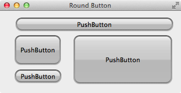
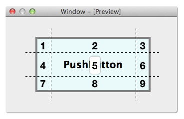
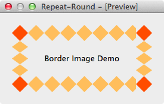
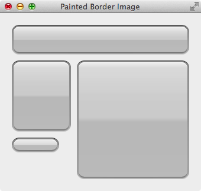

好多程序员有可能同时身兼数职，不仅要写代码，还要做美工，当 DBA，干运维，修电脑，搞得像孙悟空似的，什么都会变：
这个这个，还是回到写代码，除了写代码，其他的我们都不专业，美工的活还是让美工去做吧，那些界面很炫的效果，都是由美工设计并提供切好的图交给程序员，然后实现出来的。
例如由美工提供左边的按钮背景图，我们需要实现右边的效果，并且背景随着按钮的大小自动变化：
圆角按钮背景
圆角按钮效果

前面我们学习过的和修改背景相关的知识有 background-image，如果背景图和按钮一样大时使用 background-image 没有任何问题，但是当按钮和背景图不一样大时，背景图要么显示不全，要么重复平铺到按钮上，显然满足不了这里的需求。不过 QSS 也支持 border-image，使用 border-image 就能很快的做出上面的效果：
1 2 3 4 5 6 7 .QPushButton { border-width : 12px 12px 12px 12px ; border-image : url (:/img/round-button.png ) 12 12 12 12 repeat stretch; min-height : 24px ; padding : -10px 0 -10px 0 ; }
border-width 后面的四个数字按顺序分别为:
border-top 的高 12pxborder-right 的宽 12pxborder-bottom 的高 12pxborder-left 的宽 12px
border-image 后面的参数按顺序分别为:
背景图的路径，可以是绝对路径，相对路径，资源文件里的路径
四个数字按顺序分别为
背景图中 最上面的 12px 高的图像 填充到 Widget 的 border-top
背景图中 最右边的 12px 宽的图像 填充到 Widget 的 border-right
背景图中 最下边的 12px 高的图像 填充到 Widget 的 border-bottom
背景图中 最左边的 12px 宽的图像 填充到 Widget 的 border-left
数字后面的第一个参数 repeat|round|stretch 指定 水平方向的缩放或者平铺
数字后面的第二个参数 repeat|round|stretch 指定 垂直方向的缩放或者平铺
注意：border-width 后的数字有单位border-image 后的数字没有单位min-height 和 padding 不是必须的，这里用来细微的调节按钮的效果
Border-Image 从名字上看，像是用来图片来设置 border 的，其实是用图片来设置整个 widget 的背景的，我曾经就被这个名字迷惑过。
思考 Border-Image 的内容到此也可以说是介绍完了，但是:
上面 QSS 中的内容都清楚了吗？
那些数值可以随便填写吗？
Border-Image 的实现原理是什么？
如果不用 QSS，而是用 QPainter 自己绘制实现同样的效果要怎么绘制呢？
Border-Image 原理 下图是理解 Border-Image 的核心，又称为九宫格，看懂这个图，也就能理解 Border-Image 了:
背景图
Widget

QSS 把背景图和 widget 都分割成如图 9 个部分:
背景图的 1, 3, 7, 9 分别缩放填充到 widget 的 1, 3, 7, 9
背景图的 2 和 8 根据水平参数缩放或平铺到 widget 的 2 和 8
背景图的 4 和 6 根据垂直参数缩放或平铺到 widget 的 4 和 6
背景图的 5 同时根据水平和垂直参数缩放或平铺到 widget 的 5
使用 Border-Image，主要是设置 border-width 和 border-image。Widget 的 1, 2, 3, 4, 6, 7, 8, 9 表示 Widget 的边 Border，如果不设置 border-width，会出现不可意料的效果，border-width 里的数值当然可以随意设置，但是如果设置不当，效果就很难达到我们的要求。
一定要设置同时 border-width 和 border-image。
为了实现最佳效果，应当:
Widget 的 2 的高和背景图的 2 一样高
Widget 的 8 的高和背景图的 8 一样高
Widget 的 4 的宽和背景图的 4 一样宽
Widget 的 6 的宽和背景图的 6 一样宽
如果不这么设置，四个角就会使用缩放填充，圆角的效果有可能出现模糊。
填充模式:
stretch：用拉伸方式来填充边框背景图repeat：用平铺方式来填充边框背景图，当图片碰到边界时，如果超过则被截断round：用平铺方式来填充边框背景图，图片会根据边框的尺寸动态调整图片的大小直至正好可以铺满整个边框
为了直观的理解 repeat 和 round 的区别，下面的例子水平方向使用 repeat，垂直方向使用 round：
1 2 3 4 .QLabel { border-width: 27px; border-image: url(:/img/repeat-round.png) 27 27 repeat round; }
背景图
效果图

水平方向使用 repeat，黄色的菱形 没有被缩放，一个接着一个的向右绘制，最右边宽度不够，只绘制了一部分，被截断了
垂直方向使用 round，黄色的菱形 被缩放了，垂直方向的高度大于 2 个菱形的高度，小于 3 个菱形的高度，所以压缩绘制了 3 个菱形
QSS 的 Border-Image 和 CSS3 的 Border-Image 是一样的，可以搜索参考 CSS3 的例子深入学习。
QPainter 绘制实现 Border-Image 效果 不用 QSS 的 Border-Image，而是使用 QPainter 手动地绘制出同样的效果，原理和 Border-Image 一样，把图片分割成 9 个部分，Widget 也分割成 9 个部分，把图片上的 9 个部分绘制到 Widget 上对应的 9 个部分里面。下图是使用 QPainter 实现的效果图，和使用 QSS 的效果一样。
圆角按钮背景
QPainter 绘制的圆角按钮效果

类 PaintedBorderImageWidget 继承自 QWidget，用于演示 Border-Image 的 QPainter 实现，定义了 4 条边的宽和 9 个 pixmap，对应背景图边宽和 9 个部分。
1 2 3 4 5 6 7 8 9 10 11 12 13 14 15 16 17 18 19 20 21 22 23 24 25 26 27 28 29 30 31 32 33 34 35 36 37 38 39 40 41 42 43 #ifndef PAINTEDBORDERIMAGEWIDGET_H #define PAINTEDBORDERIMAGEWIDGET_H #include <QWidget> #include <QList> class PaintedBorderImageWidget :public QWidget { Q_OBJECT public : explicit PaintedBorderImageWidget (QWidget *parent = 0 ) protected : void paintEvent (QPaintEvent *event) Q_DECL_OVERRIDE private : void prepareBorderImages (const QString &imagePath) void drawBorderImages (QPainter *painter, const QRect &rect) const QList<QRect> calculateNineRects (const QRect &rect, int top, int right, int bottom, int left) const QPixmap scaleImage (const QPixmap &pixmap, const QSize &size) const ; int top; int right; int bottom; int left; QPixmap topLeftPixmap; QPixmap topPixmap; QPixmap topRightPixmap; QPixmap leftPixmap; QPixmap centerPixmap; QPixmap rightPixmap; QPixmap bottomLeftPixmap; QPixmap bottomPixmap; QPixmap bottomRightPixmap; }; #endif
1 2 3 4 5 6 7 8 9 10 11 12 13 14 15 16 17 18 19 20 21 22 23 24 25 26 27 28 29 30 31 32 33 34 35 36 37 38 39 40 41 42 43 44 45 46 47 48 49 50 51 52 53 54 55 56 57 58 59 60 61 62 63 64 65 66 67 68 69 70 71 72 73 74 75 76 77 78 79 80 81 82 83 84 85 86 87 88 89 90 91 92 93 94 95 96 97 98 99 100 101 102 103 104 105 #include "PaintedBorderImageWidget.h" #include <QPainter> #include <QPixmap> PaintedBorderImageWidget::PaintedBorderImageWidget (QWidget *parent) : QWidget (parent) { top = 12 ; right = 12 ; bottom = 12 ; left = 12 ; prepareBorderImages (":/img/round-button.png" ); } void PaintedBorderImageWidget::paintEvent (QPaintEvent *) QPainter painter (this ) ; drawBorderImages (&painter, rect ()); } void PaintedBorderImageWidget::prepareBorderImages (const QString &imagePath) QPixmap pixmap (imagePath) ; QRect pixmapRect (0 , 0 , pixmap.width(), pixmap.height()) ; QList<QRect> rects = calculateNineRects (pixmapRect, top, right, bottom, left); topLeftPixmap = pixmap.copy (rects.at (0 )); topPixmap = pixmap.copy (rects.at (1 )); topRightPixmap = pixmap.copy (rects.at (2 )); leftPixmap = pixmap.copy (rects.at (3 )); centerPixmap = pixmap.copy (rects.at (4 )); rightPixmap = pixmap.copy (rects.at (5 )); bottomLeftPixmap = pixmap.copy (rects.at (6 )); bottomPixmap = pixmap.copy (rects.at (7 )); bottomRightPixmap = pixmap.copy (rects.at (8 )); } void PaintedBorderImageWidget::drawBorderImages (QPainter *painter, const QRect &rect) const QList<QRect> rects = calculateNineRects (rect, top, right, bottom, left); QRect topLeftRect = rects.at (0 ); QRect topRect = rects.at (1 ); QRect topRightRect = rects.at (2 ); QRect leftRect = rects.at (3 ); QRect centerRect = rects.at (4 ); QRect rightRect = rects.at (5 ); QRect bottomLeftRect = rects.at (6 ); QRect bottomRect = rects.at (7 ); QRect bottomRightRect = rects.at (8 ); painter->drawPixmap (topLeftRect, scaleImage (topLeftPixmap, topLeftRect.size ())); painter->drawPixmap (topRect, scaleImage (topPixmap, topRect.size ())); painter->drawPixmap (topRightRect, scaleImage (topRightPixmap,topRightRect.size ())); painter->drawPixmap (leftRect, scaleImage (leftPixmap, leftRect.size ())); painter->drawPixmap (centerRect, scaleImage (centerPixmap, centerRect.size ())); painter->drawPixmap (rightRect, scaleImage (rightPixmap, rightRect.size ())); painter->drawPixmap (bottomLeftRect, scaleImage (bottomLeftPixmap, bottomLeftRect.size ())); painter->drawPixmap (bottomRect, scaleImage (bottomPixmap, bottomRect.size ())); painter->drawPixmap (bottomRightRect, scaleImage (bottomRightPixmap, bottomRightRect.size ())); } QList<QRect> PaintedBorderImageWidget::calculateNineRects (const QRect &rect, int top, int right, int bottom, int left) const int x = rect.x (); int y = rect.y (); int cw = rect.width () - left - right; int ch = rect.height () - top - bottom; QRect topLeftRect (x, y, left, top) ; QRect topRect (x + left, y, cw, top) ; QRect topRightRect (x + left + cw, y, right, top) ; QRect leftRect (x, y + top, left, ch) ; QRect centerRect (x + left, y + top, cw, ch) ; QRect rightRect (x + left + cw, y + top, right, ch) ; QRect bottomLeftRect (x, y + top + ch, left, bottom) ; QRect bottomRect (x + left, y + top + ch, cw, bottom) ; QRect bottomRightRect (x + left + cw, y + top + ch, right, bottom) ; return QList<QRect>() << topLeftRect << topRect << topRightRect << leftRect << centerRect << rightRect << bottomLeftRect << bottomRect << bottomRightRect; } QPixmap PaintedBorderImageWidget::scaleImage (const QPixmap &pixmap, const QSize &size) const { return pixmap.scaled (size, Qt::IgnoreAspectRatio, Qt::SmoothTransformation); }
我们这里选择的图片比较简单，边宽都是 12px，如果换成其他图片，边宽也要做出相应的修改。calculateNineRects() 根据给定的 4 个边的宽和高，把 Rect 从上到下，从左到右分割成 9 个部分，分割图片和 Widget 都会用到，prepareBorderImages() 中加载圆角按钮的背景图，并分割为 9 个子图片。drawBorderImages() 里把 Widget 的绘制区分割为 9 个区，然后把背景图里的每个部分填充到 Widget 的对应区域。因为缩放图片的操作比较多，所以提取为函数 scaleImage()。 这里使用的是 stretch 的算法，对于 repeat，round 想必对大家来说也不是问题了。
如果把 drawBorderImages() 里的 calculateNineRects(rect, top, right, bottom, left) 换成 calculateNineRects(rect, 24, 24, 24, 24)，也既是 Widget 的边宽大于背景的边宽，就出现了圆角模糊的情况，这也是前面我们提到的，背景图的边宽和 Widget 的边宽设置时最好一样，不能随意给几个数。
1 2 3 4 5 6 7 8 9 10 11 12 13 14 15 16 17 18 19 20 21 22 23 24 25 26 27 28 29 #include "PaintedBorderImageWidget.h" #include <QApplication> #include <QWidget> int main (int argc, char *argv[]) QApplication a (argc, argv) ; QWidget *window = new QWidget (); window->setWindowTitle ("Painted Border Image" ); window->resize (340 , 300 ); PaintedBorderImageWidget *w1 = new PaintedBorderImageWidget (window); w1->setGeometry (20 , 20 , 300 , 50 ); PaintedBorderImageWidget *w2 = new PaintedBorderImageWidget (window); w2->setGeometry (20 , 80 , 100 , 120 ); PaintedBorderImageWidget *w3 = new PaintedBorderImageWidget (window); w3->setGeometry (20 , 210 , 80 , 25 ); PaintedBorderImageWidget *w4 = new PaintedBorderImageWidget (window); w4->setGeometry (130 , 80 , 190 , 200 ); window->show (); return a.exec (); }
思考
每次调用 paintEvent() 都要计算，把 Widget 分割成 9 个 rects，然后分块绘制，有什么缺点？
可不可以在 resizeEvent() 里把 Widget 分割成 9 个 rects，在 paintEvnet() 里直接使用？
可不可以在 resizeEvent() 里把背景绘制在一个和 Widget 一样大的 QPixmap 背景图里，调用 paintEvent() 的时候绘制这个背景图？
怎么把绘制背景的内容提取出来写成一个公共的类以便复用，而不是每个需要用的类都重复的实现一次。
Android 实现同样功能的技术称为 NinePatch，不过他们把边宽的数据使用特殊技术放在了背景图里，怎么进一步扩展我们的实现，做到和 NinePatch 一样？
确定背景图的边宽 通过上面的解说，我们已经知道怎么使用 Border-Image 给 Widget 设置背景，再加上个好的美工，酷炫的界面唾手可得（即使没有美工，网上也有很多免费的酷炫界面的 PSD 文件，自己学学切图也是分分钟的事）。但是，还有一个问题，得到背景图后，怎么确定每个边的宽度是多少？如果设置不好，效果很有可能大打折扣。当然可以不停的试，然后看效果，还不满意，继续试，直到满意为止，不过，这样做工作效率低了些。
这里提供一个小技巧，可以用来快速地确定边宽，非常简单，说穿了一文不值：用图片编辑软件例如 Photoshop 把背景图按像素比例放大（不能用 Windows 的图片预览哦），然后就可以清晰的看到像素数据，边宽也就一目了然了。
例如上面的圆角按钮图片的边宽使用了 12px，为什么是 12px，而不是 8px，15px 呢？使用这里的方法，如下图所示，是不是一下就明白过来了！
Padding 的设置 以开头圆角按钮为例，border-width: 12px; min-height: 24px;，如果不设置 padding（即为 0px），那么按钮的最小高度为 12 + 0 + 24 + 0 + 12 为 48px（参考盒子模型一节）：盒子模型 一节。为了不影响 border 的绘制效果，则不能设置 margin 为负值，否则有可能要把 border 绘制到不可见区域了，剩下就是修改 padding 为负值了，这里我们用了 padding: -10px 0 -10px 0;，也可以根据情况调整为其他值。
使用 Border-Image 时调整 padding 是很重要的小技巧，需要根据背景图和需求来判断调整的数值。
作业 使用下面的 2 个背景图实现如图的聊天界面。
然后再思考一下，怎么把一张图片缩放铺满一个 Widget (提示: background-image 做不到，除非图片和 Widget 一样大)。